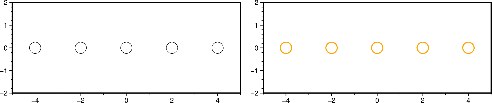
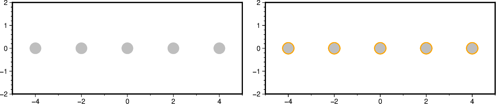
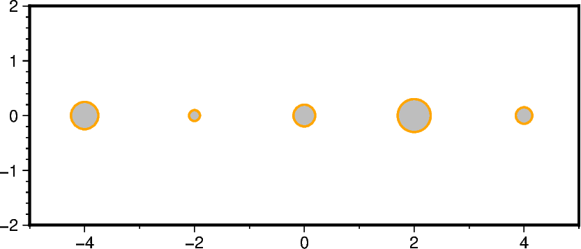
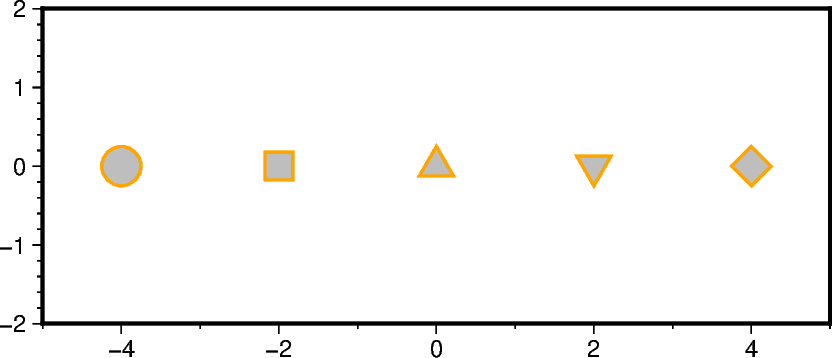
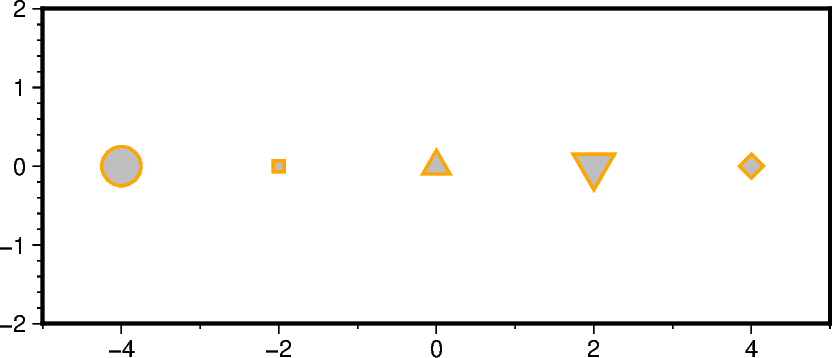

Note
Go to the end to download the full example code.
Plotting single-parameter symbols
The pygmt.Figure.plot method can plot symbols via the style, size, and
symbol parameters. This tutorial focuses on single-parameter symbols; for an
overview of the available single-parameter symbols, see the Gallery example
Single-parameter symbols. The available
multi-parameter symbols are explained in the Gallery example
Multi-parameter symbols.
Plot single-parameter symbols
Use the style parameter of the pygmt.Figure.plot method to plot all data
points with the same symbol and size. By default, the symbol is drawn unfilled with
an 0.25-points, thick, solid outline. Use the pen parameter to adjust the outline
by providing a string argument in the form width,color,style; for details
see the Gallery example Line styles.
fig = pygmt.Figure()
fig.basemap(region=[-5, 5, -2, 2], projection="X10c/4c", frame=True)
# Plot circles (first "c") with a diameter of 0.5 centimeters (second "c")
fig.plot(x=x, y=y, style="c0.5c")
fig.shift_origin(xshift="w+1c")
fig.basemap(region=[-5, 5, -2, 2], projection="X10c/4c", frame=True)
# Adjust the outline via the pen parameter
fig.plot(x=x, y=y, style="c0.5c", pen="1p,orange")
fig.show()

Use the fill the parameter to add a fill color or pattern. Note, that no outline
is drawn by default when fill is used. For the available patterns and their usage
see pygmt.params.Pattern and the Gallery example
Bit and hachure patterns.
fig = pygmt.Figure()
fig.basemap(region=[-5, 5, -2, 2], projection="X10c/4c", frame=True)
# Add a color via the fill parameter
fig.plot(x=x, y=y, style="c0.5c", fill="gray")
fig.shift_origin(xshift="w+1c")
fig.basemap(region=[-5, 5, -2, 2], projection="X10c/4c", frame=True)
# Add an outline via the pen parameter
fig.plot(x=x, y=y, style="c0.5c", fill="gray", pen="1p,orange")
fig.show()

Use individual sizes
Use the size parameter to plot the data points with individual sizes. Provide
the different sizes as a NumPy array or array-like object of integers or floats.
fig = pygmt.Figure()
fig.basemap(region=[-5, 5, -2, 2], projection="X10c/4c", frame=True)
fig.plot(
x=x,
y=y,
# Plot circles (first "c") with a diameter in centimeters (second "c")
style="cc",
size=[0.5, 0.2, 0.4, 0.6, 0.3], # Use individual sizes
fill="gray",
pen="1p,orange",
)
fig.show()

Use individual symbols
Use the symbol parameter to plot the data points with individual symbols. Provide
the different symbols as a list of strings. Here, only single-parameter symbols can
be used.
fig = pygmt.Figure()
fig.basemap(region=[-5, 5, -2, 2], projection="X10c/4c", frame=True)
fig.plot(
x=x,
y=y,
# Use a constant size of 0.5 centimeters
style="0.5c",
# Plot a circle, a square, a triangle, an inverse triangle, a diamond
symbol=["c", "s", "t", "i", "d"],
fill="gray",
pen="1p,orange",
)
fig.show()

Use individual symbols and sizes
Use the symbol and size parameters together to plot the data points with
individual symbols and sizes. The arguments passed to symbol and size must
have the same length. The unit for size is now set via the GMT default parameter
PROJ_LENGTH_UNIT which can by adjusted using pygmt.config [Default is
centimeters].
fig = pygmt.Figure()
fig.basemap(region=[-5, 5, -2, 2], projection="X10c/4c", frame=True)
fig.plot(
x=x,
y=y,
symbol=["c", "s", "t", "i", "d"],
size=[0.5, 0.2, 0.4, 0.6, 0.3],
fill="gray",
pen="1p,orange",
)
fig.show()

Total running time of the script: (0 minutes 0.567 seconds)